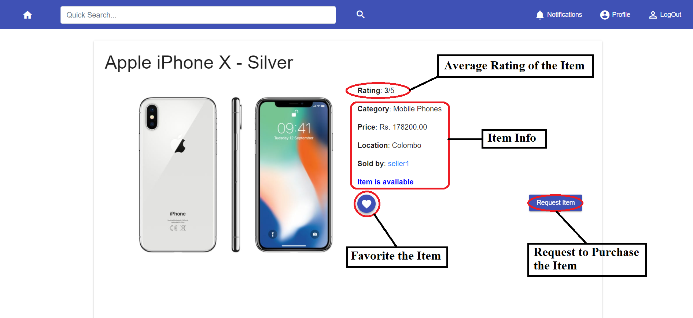
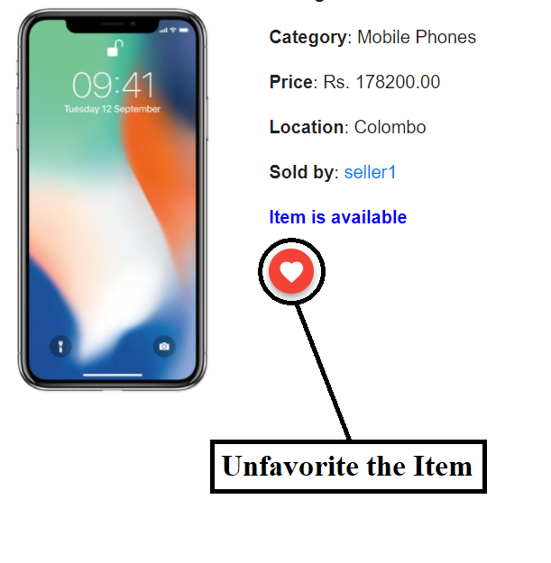
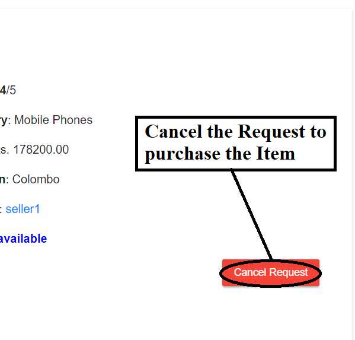

<div class="container">
  <mat-card style="margin: 15px 0">
    <h3>View, Favorite and Request Items/Services</h3>

    <hr>

    <p><strong>This can be done only if you are registered as a customer.</strong></p>

    <ul>
      <li>
        <h5>View, Favorite and Request for an Item</h5>
        <p>Select the item by <a [routerLink]="['/help/helpsearch']">searching</a> for the item or through your <a
          [routerLink]="['/help/helpprofile']">profile</a> page (if you have bought, fevorited or requested the item).
        </p>
        <p>The item can be favorited by clicking the "Favorite" button and requested for purchase by using "Request"
          button</p>
        
      </li>

      <br>
      <br>

      <li>
        <h5>Unfavorite an item (<em>if favorited</em>)</h5>
        <p>Select the item by <a [routerLink]="['/help/helpsearch']">searching</a> for the item or through your <a
          [routerLink]="['/help/helpprofile']">profile</a> page (under the "Favorited" tab).</p>
        
      </li>

      <br>
      <br>

      <li>
        <h5>Cancel request to purchase an item (<em>if requested</em>)</h5>
        <p>Select the item by <a [routerLink]="['/help/helpsearch']">searching</a> for the item or through your <a
          [routerLink]="['/help/helpprofile']">profile</a> page (under the "Requested" tab).</p>
        
      </li>
    </ul>

    <br>
    <br>

    <h5><strong><em>The procedure will be identical for a Service.</em></strong></h5>

    <div style="width: 100%; text-align: right; margin-top: 25px">
      <a [routerLink]="['/help']">
        <mat-icon style="vertical-align: middle">arrow_back</mat-icon>
        Back to Help</a>
    </div>
  </mat-card>
</div>
